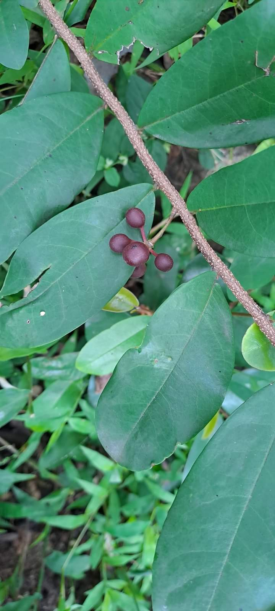
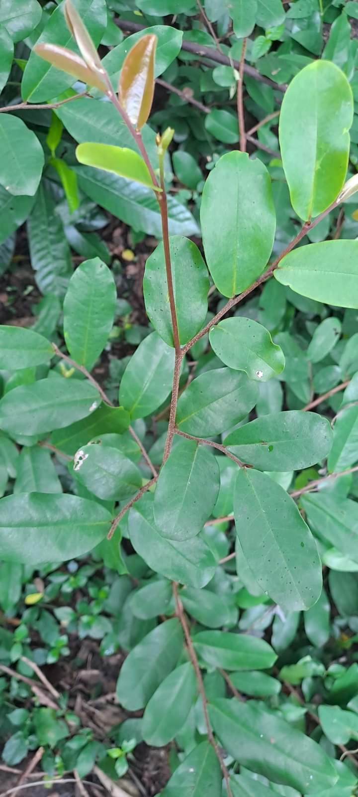
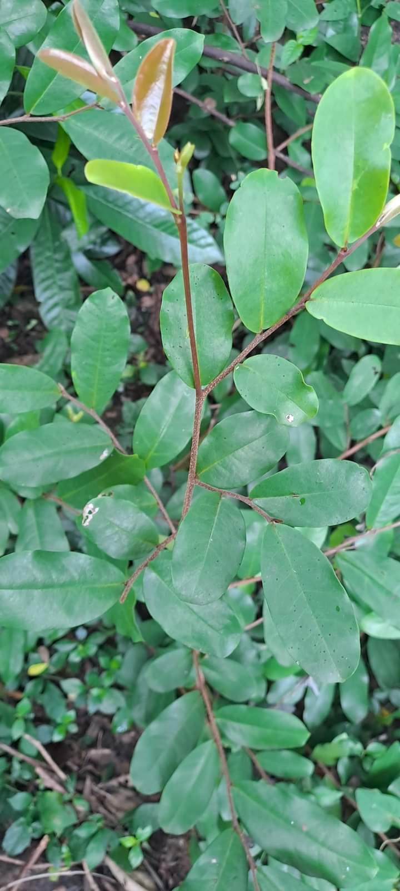
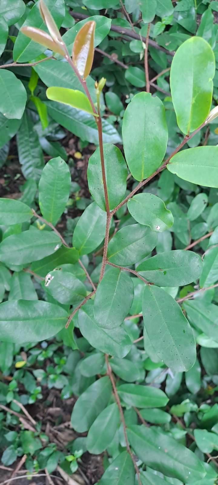

Scientific name :Polyathia suberosa
காட்டு நெட்டிலிங்கம்;
இது 5 மீட்டர் உயரம்வரை வளரும் ஒரு சிறுவகை மரம் ஆகும்;வனப்பகுதிகளிலும்,
புதர் பகுதிகளிலும் காணப்படுகிறது;
இதன் பட்டை,இலை எல்லாம் மருத்துவ குணமுடையவை;
இது இருமல்,நுரையீரல் அழற்சி,உயர் இரத்த அழுத்தம்,வயிற்றுக்கடுப்பு,
காய்ச்சல்,மூட்டுவலி,வாதவலி,வீக்கம்,பலவகை தோல்நோய்கள் முதலியவற்றை
குணப்படுத்த பயன்படுகிறது.
காட்டு நெட்டிலிங்கம்

 

